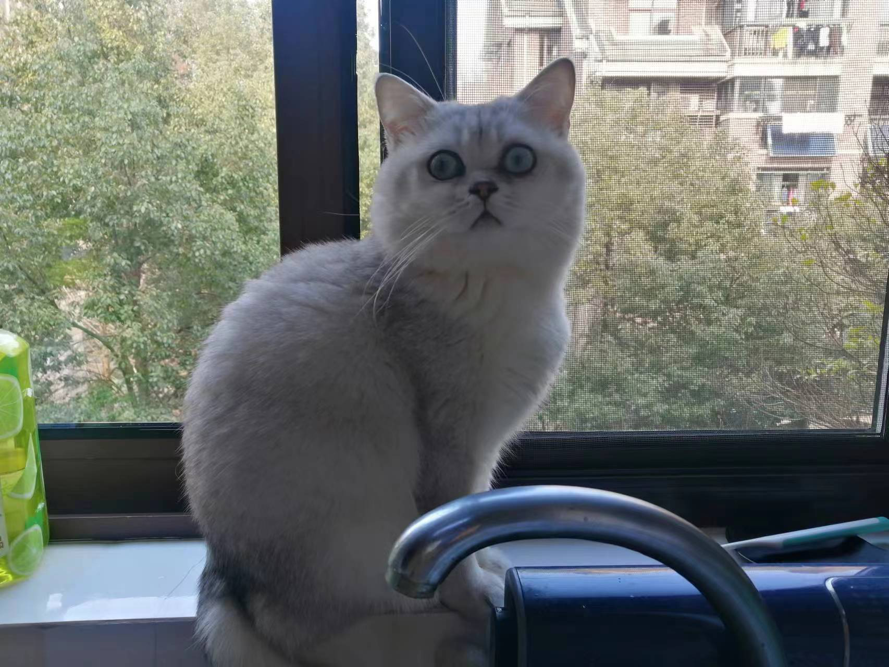

About
I am interested in reliable AI systems, agent tooling, automated planning, and data infrastructure. My public work focuses on MCP services, PDDL planning, and understandable agent interfaces.
Projects
- PDDL MCP Server — automated planning through MCP and Fast Downward.
- MetaAgent — a public portfolio edition of a meta-agent and MCP tool-calling application.
Interests
Chess, basketball, tennis, photography, reading, and caring for cats.
